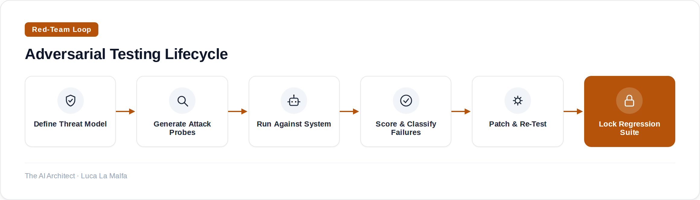

How to systematically break your own LLM systems and fix them before they reach production.
July 27, 2026
Most teams ship an LLM feature after checking that it works on the happy path. They write a few example prompts, see reasonable outputs, and call it done. This is roughly equivalent to testing a web application by clicking the homepage and declaring it secure. The difference is that with a web app, the attack surface is at least somewhat bounded. With an LLM, the input space is effectively infinite, the model's behavior is probabilistic, and the failure modes are often invisible until a user finds them in the worst possible context.
Red-teaming is the practice of deliberately trying to make your system fail — before someone else does. It comes from security, where teams simulate adversaries to find vulnerabilities before attackers do. Applied to LLMs, it means constructing inputs that expose jailbreaks, prompt injections, policy violations, hallucinations, and RAG retrieval failures. It is not optional. It is not something you do once before launch. It is an ongoing discipline, and the earlier you build it into your workflow, the cheaper the fixes.
There are two broad categories of adversarial testing worth keeping separate in your head. The first is safety and policy testing: can a user get your model to produce content it shouldn't? This includes direct jailbreaks, role-play exploits, prompt injection through tool outputs or retrieved documents, and multi-turn manipulation where the user gradually shifts the model's behavior across a conversation. The second is quality and correctness testing: does the model confidently give wrong answers, hallucinate citations, miss important context from a RAG pipeline, or behave inconsistently when the same question is phrased differently? Both categories matter, and conflating them leads to shallow coverage of each.
The failure mode I see most often in enterprise projects is teams that only do the first kind — they run some jailbreak prompts, see the model refuse, and declare victory. Then they go live and discover the model fabricates product specifications when the retrieval returns empty, or contradicts itself when a user rephrases a question. Safety red-teaming without quality red-teaming is half the job.

Before you write a single adversarial prompt, you need a threat model. This sounds formal, but in practice it means answering three questions: who are the users, what would a bad actor want to extract or cause the system to do, and what data or capabilities does the system actually have access to? A customer-service bot with access to order history has a completely different threat surface than an internal coding assistant that can read a codebase. Skipping the threat model means you'll spend time testing for attacks that aren't plausible in your context and miss the ones that are.
Once you have a threat model, probe generation can be partly automated. LLMs are genuinely useful here — you can prompt a model to generate variations of known attack patterns, paraphrase injection attempts, or produce adversarial questions that a hostile user might ask. This is not a substitute for human red-teamers who bring creativity and domain knowledge, but it dramatically increases coverage. The key discipline is keeping a structured log of every probe and its result, because you're building a regression suite, not just doing a one-off audit. Every failure you find and fix needs a corresponding test that prevents it from silently regressing in the next deployment.
On the scoring side, resist the temptation to eyeball results. At small scale you can review outputs manually, but as soon as you have more than a few hundred probes, you need automated graders — typically another LLM acting as a judge, or deterministic classifiers for specific categories like PII leakage or policy keywords. The grader itself needs to be calibrated: what does a pass look like, what does a fail look like, and what's the gray zone where you need a human decision? Document this before you run anything, because changing the grading criteria mid-run makes your results incomparable.
One thing that consistently surprises teams when they first do this seriously: the volume of subtle failures dwarfs the dramatic ones. The model almost never says something catastrophically wrong in a way that's obvious. It hedges slightly less than it should, it retrieves the wrong document and presents it with confidence, it applies a policy consistently in English but inconsistently in French. These are the failures that compound over millions of interactions. The dramatic jailbreaks are the ones that get press; the subtle drift is the one that quietly erodes user trust.
What I actually run before every major release
On every project that goes into production, I run three passes before sign-off. First, a static scan of the system prompt and any tool definitions for obvious injection vectors — things a malicious document in a RAG pipeline could exploit. Second, an automated probe suite covering the client's specific threat model: role-play attacks, multi-turn manipulations, and edge cases from the actual user data. Third, a short manual session where I personally try to break it, because automated tools still miss creative attacks. The third pass almost always finds something the first two didn't. I budget half a day for it and have never felt it was wasted.
promptfoo/promptfoo — Red-teaming and vulnerability scanning for prompts, agents, and RAG.